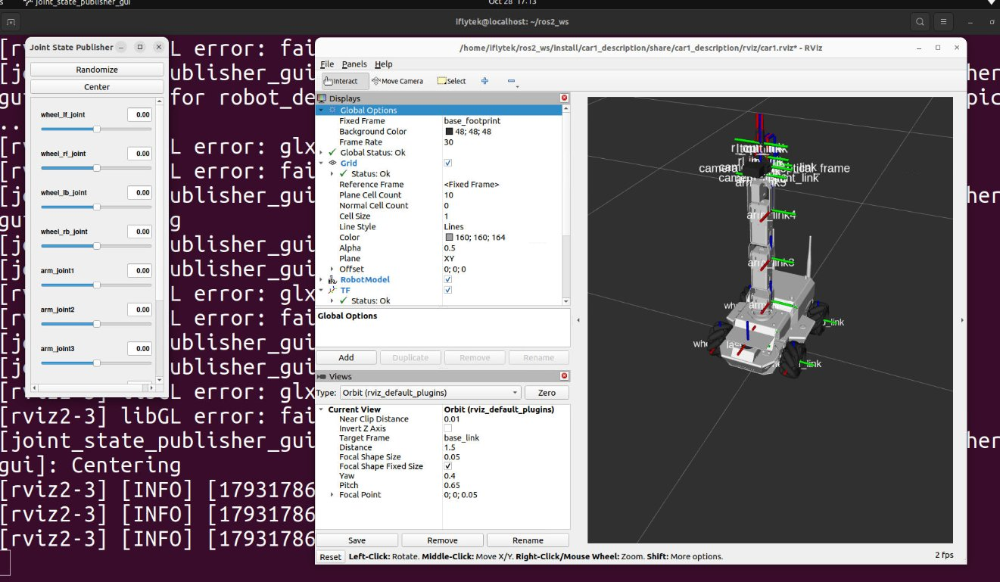
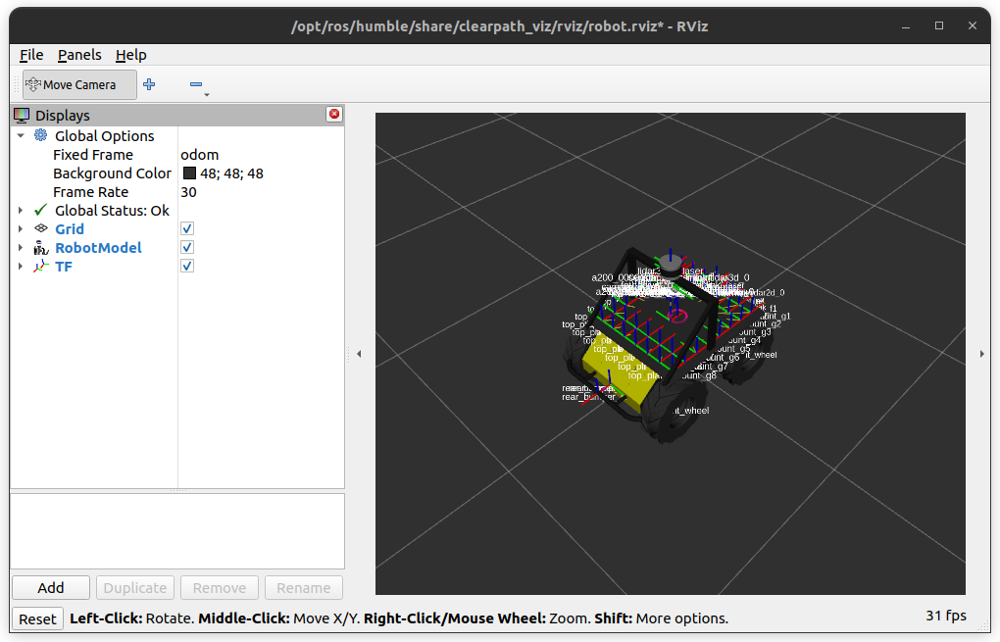
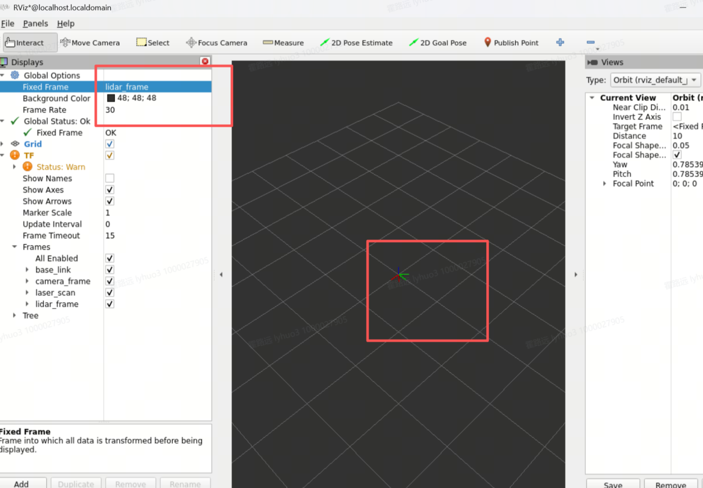

TF2 坐标系变换：让机器人知道自己"在哪、朝哪"
雷达一帧有 360 个点、摄像头一张图有几万个像素，但它们各自活在自己的坐标系里。本实验吃透 TF2 的树状变换原理与四元数表示，实现静态/动态坐标发布，并用 tf2_echo / view_frames 完成可视化验证。
目标本课学完，你应该能做到
能阐述 TF2 变换树的结构原理——为什么坐标系必须组织成"有向无环图（DAG）"，以及 /tf 与 /tf_static 分别承载动态 / 静态变换的设计意图。
能正确使用 StaticTransformBroadcaster 发固定偏移、TransformBroadcaster 定时发动变换，用 Buffer + TransformListener 查询任意两个坐标系的相对位姿。
独立编写节点发布 base_link → lidar_frame → camera_frame 的变换树，并用 tf2_echo 与 view_frames 验证。
能在 B2 或 C1 上，为结构光深度相机、激光雷达发布它们在底盘坐标系下的 TF2 变换。
/tf_static 只用一次发布 + Transient Local（后加入的节点也能拿到）；动态变换必须持续重发。难点：旋转为什么用四元数而不是欧拉角——以及
tf2_echo 输出的那个四元数该怎么读。01引例：这束激光该画在哪
frame_id 字段——它们背后都指向同一个问题：不同坐标系里的数据怎么对齐。本章的 TF2 就是这个问题的系统性答案，也是后面 URDF 与导航的地基。laser_link）。base_link）甚至相对世界原点（map）的坐标。30cm 的雷达读数，直接丢给建图节点，地图就歪了。02先看现象：启动案例，打印 TF 树，对照仿真画面
三步、两分钟：启动 EXP-15 的 rviz 仿真案例 → 终端里打印出 TF 树 → 对照仿真画面——本节只复制粘贴；树怎么建、五种玩法在 04 节。
本课先用实验环境里现成的 car1_description 仿真案例看现象：一条 ros2 launch car1_description display.launch.py 同时拉起三个节点——joint_state_publisher_gui（关节滑块窗）、robot_state_publisher（读 URDF，把整车坐标系发布成 TF 树——现象的"发布者"就是它）、rviz2（仿真画面）。下面每条命令都可直接复制到终端执行，命令之后紧跟"应该看到的结果"与排错提示；三步跑通后，再对照图 19-1 把现象还原成"谁发、走哪条话题、谁读"的系统逻辑：
生产者×2（滑块窗喂关节角、robot_state_publisher 算并发布 TF）+ 展示×1（rviz2）——从这一刻起，整车 TF 树开始对外发布：
ros2 launch car1_description display.launch.py # [INFO] [joint_state_publisher_gui]: ... ← 关节滑块窗弹出 # [INFO] [robot_state_publisher]: ... ← TF 发布者已上线 # [INFO] [rviz2]: ... ← rviz2 主窗弹出（Grid + 小车 + TF 轴）
✔ rviz 里看到小车模型与密集的 RGB 坐标轴——car1.rviz 已自动勾选 Grid / RobotModel / TF，Fixed Frame = base_footprint；启动画面实拍见下方步骤 ③。
ℹ 报 Cannot find launch file → 本终端还没 source 工作空间；launch 占着这个终端别关——TF 挂在这个进程上，关了后面的查询全部 Waiting，其余操作请开新终端。
先 source 同一套环境，再订阅 /tf 与 /tf_static 共 5 秒——统计每个 frame 的发布情况并把树画成 PDF：
source /opt/ros/humble/setup.bash && source ~/ros2_ws/install/setup.bash ros2 run tf2_tools view_frames
frames_*.pdf：应是一棵以 base_footprint 为根的合法树——单父、无环，能数出 base_link、四个 wheel、laser_link、arm 各节等 frame——这就是本课要交付的第一条证据（不想开 PDF 时，cat frames_*.gv 或回看终端 Result 段也能按文本核对父子边）。⚠ 若某 frame 报超时/压根没出现 = 它的发布者没跑：九成是步骤 ① 的 launch 没起、被 Ctrl+C 关了、或两个终端
ROS_DOMAIN_ID 不一致（互相看不见）。终端里的树"字长什么样"已经见过，再看它"画长什么样"——这就是启动后桌面上该有的样子（EXP-15 图 15-1 实拍）：

三步都跑通之后，回过头看这个系统的逻辑关系——启动、发树、读树、看画，各环节在链路里怎么咬合：
03原理讲解
TF2 树：单父、无环、两条话题
建立在 EXP-06 话题与 QoS 之上——坐标系之间的"关系"也是靠两条话题发出来的。
/scan、/map、/robot_description 自己的话题里，TF 只负责"换算"：把点从一个坐标系搬到另一个坐标系该去的位置。展开读这个定义：树里直接存的是每条父子边，任意两个远隔坐标系的位姿是查询时沿树链式组合出来的；每条边 = 一段平移 (x,y,z) + 一段旋转四元数，都带时间戳——动态边（/tf）随时间更新，静态边（/tf_static）恒定但同样带时间戳。坐标系是一把把尺子，一条 TF 变换就是"B 尺子摆在 A 尺子的什么位置、朝什么方向"；把所有尺子的摆放关系串成一棵树，就是 TF 树。TF2 把机器人身上所有坐标系组织成一棵树：每个坐标系最多一个父坐标系，不能成环。典型结构：
map ← 世界原点（SLAM 维护）
└── odom ← 里程计原点（会漂移）
└── base_link ← 车体中心
├── laser_frame ← 雷达（安装位置 = 静态变换）
├── camera_link ← 相机
└── arm_base
└── gripper_link ← 夹爪
意思很直白：laser_frame 的父是 base_link，base_link 的父是 odom，odom 的父是 map。任何两个坐标系之间只有一条路——所以查变换永远有唯一解。
全局地图原点，由 SLAM / 定位节点维护，漂移会被不断修正。
轮式里程计原点，短时间平滑但会长期漂移。
机器人本体中心，一切传感器都最终挂到它身上。
雷达、相机各自的测量原点，安装位置即静态变换。
| 话题 | 内容 | QoS / 频率 | 设计意图 |
|---|---|---|---|
/tf | 动态变换（odom→base_link、机械臂关节角…） | 10 ~ 100 Hz 普通 Reliable + KeepLast(100) | 量大、值一直在变，新订阅者只需拿到"最新值"，历史旧值没有意义 → KeepLast 限深 |
/tf_static | 静态变换（雷达到车体的安装位姿…） | 一次性发布，QoS = Transient Local（latch） | 装好就不变；后启动的节点也必须能拿到 → 靠 Transient Local "重放"最后一条给新订阅者（同 ROS2 参数的 transient_local 语义） |
/tf_static 的 latch 语义，用的就是 EXP-06 里讲过的 QoS Durability = Transient Local：发布者替"迟到的订阅者"保留最后一条。注意它不是参数的机制——参数走的是"参数服务 + 参数事件"这套独立设施，和话题 QoS 无关。这里真正要迁移的知识只有一个：凡是"后加入的节点也必须拿到"的数据，就该给它 Transient Local。两类角色，分工和话题的 pub/sub 一模一样——一个广播，一个监听：
谁来发：里程计节点发 odom→base_link；robot_state_publisher 读 URDF 发传感器位姿；标定好相机外参后发 base_link→camera_link。
两种：静态（装好不变）用 StaticTransformBroadcaster，只发一次；动态（一直在变）用 TransformBroadcaster，持续重发。
谁来听：SLAM 把点云转到 map；Nav2 判断目标点相对车体多远；视觉识别到物体后转到 base_link 做抓取。
查询要给三样：目标坐标系、源坐标系、时间戳——TF 带时间缓存，可以回查过去几秒（查询入口见下一主场）。
② 自动链式：你只发布"自己负责的那一条边"，连乘合成、跨树查询交给 tf2，永远不用手写 4×4 矩阵；
③ 带时间缓存：传感器数据有延迟，查询时可以"回查"几秒内的历史变换，用数据自己的时间戳去对齐，点云才不会飘。
一条变换里在算什么：先旋转、后平移
承接上一主场：每条边存的是"平移 + 旋转"两个量——先在二维世界里拖动它们，看子坐标系的读数怎么变成父坐标系的坐标：
--x --y --yaw（三维再加 --z）；点 P 的读数好比雷达点在 laser_frame 里的坐标，右侧两行公式就是 tf2 替你做的事——04 节代码 A 把 (x, y, z, 四元数) 写进 Transform，落的正是这组量。--x / --z 的设定值、逐位对得上；真车实测值 [0.000, 0.000, 0.029] 在 04 节第 5 步。一次 TF 查询的全过程
接上一主场的"监听者"——要问"雷达系里的点 (0.3, 0)，在 map 里是哪"，tf2 只干两件事：先向上爬，再向下拼，全程不用你手写矩阵：
- 从
laser_frame沿父指针一路向上爬，收集沿途每一段变换； - 从
map也向上爬，找到两条路第一次相遇的共同祖先（汇合点）； - 从汇合点按下回程，该取逆的取逆、该连乘的连乘，拼出 A→B 的总变换。
lookup_transform('map','laser_frame') 背后做了哪三步？self.buffer = Buffer() → self.listener = TransformListener(self.buffer, self) →
self.buffer.lookup_transform('map', 'laser_frame', rclpy.time.Time(), timeout=rclpy.duration.Duration(seconds=1.0))。三个参数的含义：目标系（转到哪）、源系（数据原来在哪）、时刻（
Time() = 最新；传具体时刻则用缓存历史插值）——04 节代码 B 是它的完整形态。出厂安装决定，一次发布，靠 /tf_static 的 Transient Local 让后加入节点也能读到。
定位/里程计 10-100Hz 持续刷新，新订阅者只取最新一条（KeepLast）。
每个节点只发布自己那一段边，跨 4 层的变换交给 TF2 自动连乘。
查询带时间戳 t 时，对两条动态边在 t 附近做插值/外推，保证"同一时刻"的几何一致。
旋转为什么要用四元数
承接上一主场：查询链里每一段的"旋转"在 TF 中都以四元数存储与连乘——先把三个姿态角拖出肌肉记忆，再看欧拉角为什么在 ±90° 会出事：
--roll --pitch --yaw（04 节命令二即此写法，弧度制）；四元数写法 --qx --qy --qz --qw——两组同写直接报错 Cannot specify both quaternion and Euler rotations。代码侧填 t.rotation.x/y/z/w：04 节代码 A 的 rotation.w = 1.0 就是单位四元数。三种表示法对比——看 ROS2 为什么只认四元数：
| 表示法 | 表达 | 问题 |
|---|---|---|
| 欧拉角 (roll, pitch, yaw) | 直观，人眼能理解"偏航 30°" | ① 万向节死锁：俯仰 ±90° 时丢失一个自由度；② 插值不均匀，动画打结；③ 顺序敏感（ZYX vs XYZ 结果不同） |
| 旋转矩阵 3×3 | 9 个数，乘法直接复合 | 冗余（只有 3 个自由度却用 9 个数），累积浮点误差后可能不再正交，需周期性重新正交化 |
| 四元数 q=(x,y,z,w) | 4 个数，无奇点 | ROS2 的标准选择：万向节死锁不存在、插值用 Slerp 均匀平滑、复合只要哈密顿乘法 |
半角公式（本实验只需 yaw）：机器人在地面打转，本质是绕 Z 轴转 yaw 角，四元数退化为两个非零分量：
# 绕 Z 轴旋转 yaw：四元数只有 z、w 两个分量非零 z = sin(yaw / 2) w = cos(yaw / 2) # x = y = 0 # yaw = 90° ⇒ z = sin45° = 0.7071, w = cos45° = 0.7071 # yaw = 180° ⇒ z = sin90° = 1.0, w = cos90° = 0.0 # 反解：yaw = 2·atan2(z, w) ← 看代码时反过来算角度就用它
atan2(z, w) * 2 就是在从四元数反求偏航角。在 ROS2 消息里长什么样：geometry_msgs/msg/Transform = translation(x,y,z) + rotation(x,y,z,w)；Quaternion 四个字段顺序固定为 x, y, z, w（不是 w,x,y,z！阅读时留心）。
04实验步骤
围绕 02 节那条 ros2 launch car1_description display.launch.py 分五步：① 理解 TF2 变换树概念 → ② 发布静态 TF 变换 → ③ 发布动态 TF 变换 → ④ 可视化验证 TF 树 → ⑤ 查询任意坐标系相对位姿。每步按内容选呈现方式——是命令就逐项解释怎么用，是代码就截关键段，要可视化就把画面放出来，是查询就给命令并逐行解读输出。
第 1 步 · 理解 TF2 变换树概念
树不是凭空出现的：案例里 URDF 的每个 <link> = 一个坐标系，每条 <joint> = 一条父子边；launch 把整份 URDF 塞给 robot_state_publisher，它照着 URDF 把树发进两条话题。
关键代码 · URDF 里的“树根与第一条边”（截自 car1_description/urdf/car1.urdf 开头）：
<link name="base_footprint" /> <!-- 根坐标系：车在地面的投影点 --> <joint name="base_joint" type="fixed"> <!-- 第一条边，静态 --> <origin xyz="0 0 0.029" rpy="0 0 0" /> <!-- 边上存的量：z 抬高 2.9cm --> <parent link="base_footprint" /> <!-- 父 --> <child link="base_link" /> <!-- 子：child 只出现一次 = 单父 --> </joint> <joint name="wheel_lf_joint" type="continuous"> <!-- 活动边：随时在变 --> <parent link="base_link" /><child link="wheel_lf_link" /> <axis xyz="0 1 0" /> <!-- 绕 y 轴滚 --> </joint>
关键代码 · launch 怎么给树“上电”（截自 display.launch.py 的骨架）：
with open(urdf_file, 'r') as f:
robot_desc = f.read() # ① 整份 URDF 读成字符串
LaunchDescription([
Node(package='joint_state_publisher_gui', ... # ② 滑块窗：活动关节角的输入源
parameters=[{'robot_description': robot_desc}]),
Node(package='robot_state_publisher', ... # ③ 树的发布者（本课主角）
parameters=[{'robot_description': robot_desc}], output='screen'),
Node(package='rviz2', arguments=['-d', rviz_config]) # ④ 消费者：读两条话题画轴
])
ros2 node list 列出当前 ROS 图里的全部节点——树的“发布者 / 输入源 / 消费者”是否到齐，一行看清：
ros2 node list # /joint_state_publisher_gui ← 滑块窗（活动关节角来源） # /robot_state_publisher ← 树的发布者（本课主角） # /rviz2 ← 消费者：读 /tf、/tf_static 画坐标轴
⚠ 缺
/robot_state_publisher = launch 没起或已退出——回 02 节步骤 ① 重启。整棵树的轮廓——02 节步骤 ② 导出的 frames.pdf 就是它的实拍版，先在这里把名字认全：
base_footprint # 根 └── base_link # base_joint · fixed（静态边） ├── wheel_lf/rf/lb/rb_link … # 4×continuous（动态边） ├── laser_link # laser_joint · fixed（静态边） ├── imu_link # imu_joint · fixed └── arm_base_link → arm_link1…5 # revolute 链（动态边） └── camera… / tcp_link # 相机链挂在 arm_link4 下
base_joint 写着 xyz="0 0 0.029"，第 ⑤ 步 tf2_echo base_footprint base_link 就打印 [0.000, 0.000, 0.029]——URDF 是账本，TF 是账本的实时播报；fixed 的边进 /tf_static，continuous/revolute 的边进 /tf，正好是 03 节两条话题表的现场版。第 2 步 · 发布静态 TF 变换
案例里所有 type="fixed" 的关节就是静态边：URDF 写好、launch 一启动，robot_state_publisher 一次性发到 /tf_static。下面三条路给你——命令读出它已发布的边、命令再发一条新边、代码怎么写。
关键代码 · URDF 里两条有代表性的 fixed 边（一纯平移、一带旋转）：
<!-- 雷达安装位：纯平移，车体前方 14.6cm、高 8.7cm --> <joint name="laser_joint" type="fixed"> <origin xyz="0.146213088049965 0 0.0874000000000005" rpy="0 0 0" /> <parent link="base_link" /><child link="laser_link" /> </joint> <!-- 深度相机光学系：rpy 把“z 朝前”的车体系扭成光学约定 --> <joint name="camera_depth_optical_joint" type="fixed"> <origin xyz="0 0.01655 0" rpy="-1.57079633 0 -1.57079633" /> <parent link="camera_depth_link" /><child link="camera_depth_optical_frame" /> </joint>
--qos-durability transient_local 是这条命令的灵魂——/tf_static 是 latched 话题（03 节 QoS 表），订阅端 durability 不对齐就收不到已发布的最后一条。读完 Ctrl+C 退出：
ros2 topic echo /tf_static --qos-durability transient_local # transforms: ← 数组，每条 fixed 边一项 # - header: {frame_id: base_footprint} ← 父 # child_frame_id: base_link ← 子 # transform: {translation: {z: 0.029}, # rotation: {w: 1.0}} ← 数值 = URDF 里的原值 # - {frame_id: base_link, child_frame_id: laser_link, ...}
⚠ 收不到 → 是没带
--qos-durability transient_local，或 launch 已退出。案例之外想临时加一条边（比如假想加装一台雷达），static_transform_publisher 最快——参数逐项解释：
# 假想雷达：车体前方 10cm、高 20cm、姿态不转 ros2 run tf2_ros static_transform_publisher \ --x 0.1 --y 0 --z 0.2 \ --yaw 0 --pitch 0 --roll 0 \ --frame-id base_link --child-frame-id laser_frame # --x/--y/--z 平移，单位米 # --yaw/--pitch/--roll 欧拉角，单位弧度（90° = 1.5708） # --frame-id 父坐标系；--child-frame-id 子坐标系（别写反！） # 旧式裸位置参数已弃用，与 flag 混用直接报错退出
⚠ 子系故意叫 laser_frame（URDF 那条叫 laser_link）——同名就两个发布者抢同一个 child，TF2 会报 frame 冲突。
代码 A · 静态发布节点 StaticTfPub（代码方式）
同一条边的第三种发法（代码版）——与命令二殊途同归，逐字段含义见注释：
import rclpy from rclpy.node import Node from geometry_msgs.msg import TransformStamped from tf2_ros import StaticTransformBroadcaster class StaticTfPub(Node): def __init__(self): super().__init__('static_tf_pub') # ① StaticTransformBroadcaster —— 内部自动用 /tf_static + TransientLocal self.pub = StaticTransformBroadcaster(self) self.send() def send(self): t = TransformStamped() t.header.stamp = self.get_clock().now().to_msg() t.header.frame_id = 'base_link' # 父 t.child_frame_id = 'laser_frame' # 子（只能有一个父！） t.transform.translation.x = 0.10 # 雷达在车体前方 10cm t.transform.translation.z = 0.20 # 高度 20cm（TF2 支持 3D） # 无旋转 ⇒ 单位四元数 (x=0, y=0, z=0, w=1) t.transform.rotation.w = 1.0 self.pub.sendTransform(t) # 只发这一次，后加入的订阅者也能收到
第 3 步 · 发布动态 TF 变换
案例里 continuous / revolute 关节就是动态边。链路从滑块开始：拖滑块 → /joint_states → robot_state_publisher 计算 → /tf 持续刷新，rviz 与 tf2_echo 都从这里读“活”值。
关键代码 · URDF 里两种活动关节（轮子无上限、机械臂有限位）：
<joint name="wheel_lf_joint" type="continuous"> <!-- 轮子：可无限转 --> <origin xyz="0.0973 0.1058 0.0195" rpy="0 0 0" /> <parent link="base_link" /><child link="wheel_lf_link" /> <axis xyz="0 1 0" /> <!-- 绕 y 滚动 --> </joint> <joint name="arm_joint1" type="revolute"> <!-- 机械臂第一轴：正负限位 --> <parent link="arm_base_link" /><child link="arm_link1" /> <axis xyz="0 0 1" /> <!-- 绕 z 转 --> <limit lower="-3.14" upper="3.14" effort="100" velocity="1" /> </joint>
ros2 topic hz 话题名 统计每秒收到多少条消息——动态边“到底动没动”，频率是最直接的证据：
ros2 topic hz /tf # average rate: 33.3xx ← 每秒约 33 条（随滑块活动波动） # min: …s max: …s window: …s ← 窗口内最快/最慢间隔
⚠ 输出停在 0 / 没有话题 = 输入源没了（launch 退出）；对照
ros2 topic hz /tf_static 是 no message——静态边不重发，正好验证两条话题的分工。先开 ros2 topic echo /tf 看结构（child 多为 wheel_*、arm_*，stamp 每条都新），再回滑块窗拖 arm_joint1 或任一轮子：
ros2 topic echo /tf # - header: {stamp: {sec: ...}, frame_id: base_link} ← 时间戳持续前进 # child_frame_id: wheel_lf_link ← 活动关节的子系 # transform: {translation: {...}, # rotation: {x, y, z, w}} ← 数值随滑块实时变
tf2_echo base_link wheel_lf_link 的输出跟着变——这就是 03 节“/tf 动态、KeepLast 拿最新”的活体现场。⚠ 滑块窗没反应 = 先看终端 A 的 launch 是否还开着。
/tf 的活值一路往上游追，源头就是关节角本身——/joint_states 由滑块窗（joint_state_publisher_gui）发出，robot_state_publisher 拿它去算 /tf。边拖滑块边看：
ros2 topic echo /joint_states # header: {stamp: {sec: ...}} ← 拖滑块时时间戳前进 # name: [arm_joint1, wheel_lb_joint, ...] ← 关节名列表（对上 URDF 的 joint） # position: [0.52, -1.20, ...] ← 各关节当前角（弧度）——拖哪个，哪个变
⚠ 拖滑块这里不动 = 滑块窗没开（回 02 步骤 ① 看终端 A 的 launch）。
三个名词的对应关系——joint_state_publisher、/joint_states、TF 各扮什么角色，一次说清：
| 环节 | 是什么 | 在案例里 |
|---|---|---|
| joint_state_publisher(_gui) | 关节角的生产者（真车=底盘驱动 / 编码器；gui 是带滑块的可视化版） | 滑块窗：拖动即产生活动关节角 |
/joint_states | 话题，链路输入：各关节当前角 name[] + position[]（弧度） | 命令三刚读过 |
| robot_state_publisher | 算工：读 URDF 结构 ＋ 吃 /joint_states 角度 → 解出每条边的平移/旋转 | launch 里第二个节点（02 节 node list 见过） |
/tf ← /tf_static | 话题，链路输出：算好的边广播给所有人（fixed → /tf_static 发一次；活动 → /tf 持续发） | RViz、tf2_echo、rqt_tf_tree、导航全从这读 |
滑块(真车=驱动) → /joint_states → robot_state_publisher ＋ URDF → /tf → 消费者。真车上只是换了输入源（/joint_states 来自底盘、odom→base_link 来自里程计），四个环节一一对应，零差别。第 4 步 · 可视化验证 TF 树
同一棵树四种看法：终端导出快照（02 步骤 ② 已跑过，这里给检查点）→ RViz 直播：拖滑块看坐标轴实时转动 → rqt_tf_tree 常驻树图（⟳ 点刷新，要先 apt 装包） → 面板和树图互相对照。命令的现场你都有了，本步给的是“看什么、怎么算对”。
命令与输出在 02 节步骤 ② 完整跑过（ros2 run tf2_tools view_frames → 当前目录生成 frames_*.pdf/.gv，终端同时打印文字版树 Result: frame_yaml=…），这里列拿着树图该核对什么：
⚠ 同名 child 出现两个 parent、或整枝缺失 → 回第 2/3 步查发布者，别急着查数据。
launch 加载的 car1.rviz 已勾选 TF 图层；想复核就自己来一遍：左下 Add → By display type → TF → OK，右侧勾 Frames / Names / Arrows，Fixed Frame 保持 base_footprint。
然后左手拖 arm_joint1 滑块：视口里机械臂的坐标轴实时跟着转、帧名一起摆——静态枝（laser_link、base_link 等）纹丝不动，动的只有活动链，这正是“动态 TF 的直播画面”。先看下面两张现场图：
📸 关键操作与现象截图（2 图）


⚠ 第一行先装包：rqt_tf_tree 不在 ros-humble 默认安装里——不装直接跑第 2 行会报 command not found，装一次即可。view_frames 是按秒数拍照，rqt_tf_tree 是常驻不关的监控窗口：数据同样来自 tf2_frames 服务（与 view_frames 同源），但随时点工具栏 ⟳ 刷新就重新拉一次现场。窗口放右屏、滑块 GUI 放左屏，左手拖、右手刷新，变换是否在动一目了然：
sudo apt install ros-humble-rqt-tf-tree # ① 只需一次；不装则 ② 直接 command not found ros2 run rqt_tf_tree rqt_tf_tree # ② 打开常驻树窗口 # 树画出来后：拖 arm_joint1 滑块 → 点 ⟳ 刷新 # · 树形不变 = 拓扑由 URDF 定死，拖滑块不增删边（正常！） # · 变的是边标签： Most recent transform 时间戳往前走、Average rate 显示在频发 # 数值平移/转角在第 5 步 tf2_echo，轴的转动在刚才的 RViz——三窗同看才完整
Most recent transform 时间戳持续更新 = 变换在实时发布；树形与 frames.pdf 逐枝一致（单父、无环、同根）。⚠
command not found = 没先跑第 ① 行安装；窗口空白 / No tf data received = 终端 A 的 launch 没在跑；拖滑块树“没变化”是预期——结构看这里，数值看第 5 步、动作看 RViz。第 5 步 · 查询任意坐标系相对位姿
查询是 TF2 的最终出口——任意两个 frame 之间，一条命令出数值。命令行用 tf2_echo，代码里用 Buffer + lookup_transform；两种形态一个语义：参数顺序永远是（目标系·父，源系·子）。
用法：ros2 run tf2_ros tf2_echo <目标系(父)> <源系(子)>——把“子系的读数换算到父系”的那条变换打印出来，持续刷新，Ctrl+C 退出：
ros2 run tf2_ros tf2_echo base_footprint base_link # At time 1792054921.106 ← 查询时刻（默认取最新；TF 全程带时间戳） # Translation: [0.000, 0.000, 0.029] ← 平移，单位米 = URDF base_joint 的 z # Rotation: in RPY (radian): [0.000, -0.000, 0.000] ← 姿态，弧度；全 0 = 无旋转 # （还会持续打印 Quaternion x y z w 与 4×4 Matrix：左上 3×3 旋转、第四列平移）
xyz="0 0 0.029"；RPY 全 0 = 静态边无旋转；数值稳定不跳 = 静态边（拖滑块的活动边才会变）。⚠ 一直
Waiting for transform / frame does not exist → launch 没跑（回 02 步骤 ①），或两个参数写反、frame 名拼错。tf2_echo 的语义不随 frame 名变化——多查几组，整棵树就在手里“活”了：
# 查雷达安装位（静态边） ros2 run tf2_ros tf2_echo base_link laser_link # Translation ≈ [0.146, 0.000, 0.087] ← URDF laser_joint 的 xyz 原值 # 两参数对调 = 求逆：数字取反 ros2 run tf2_ros tf2_echo base_link base_footprint # Translation ≈ [0.000, 0.000, -0.029] ← 第一条查询的逆 # 查活动边：拖 arm_joint1 滑块，输出实时变 ros2 run tf2_ros tf2_echo base_link arm_link1
💡 跨多级查询（如 wheel_lf_link → camera_depth_optical_frame）不用你指定中间经过谁——走到共同祖先那一段，TF2 自己拼。
代码 B · 查询节点 Buffer + Listener（代码方式）
from tf2_ros import Buffer, TransformListener self.buffer = Buffer() self.listener = TransformListener(self.buffer, self) # 监听 /tf + /tf_static 填充 buffer # 查询 laser_frame 的数据 → map 系；超时 1.0s（树还没齐时阻塞等待） t = self.buffer.lookup_transform( 'map', 'laser_frame', rclpy.time.Time(), # Time()=最新时刻；传具体时间则做历史插值 timeout=rclpy.duration.Duration(seconds=1.0)) tx = t.transform.translation.x qz, qw = t.transform.rotation.z, t.transform.rotation.w yaw = 2.0 * math.atan2(qz, qw) # 03 节半角公式反解
TransformListener 就是普通的订阅节点，把两条话题的值缓存进 Buffer；③ 发布者只发一条边，查询者却能跨整棵树——解耦靠的就是 /tf 这对公共话题，和 EXP-06 的话题解耦完全同构。沙盘探究：四元数换算 + TF 链查询
回到 03 节"查询全过程"与"四元数"两块主场，这里用两块沙盘动手验证：①拖动偏航角，观察四元数分量与朝向实时变化；②自选两端坐标系，看 TF2 如何拼出查询路径。
05注意事项与验收
注意事项（七条红线）
| 类别 | 说明 |
|---|---|
| 禁环防空转 | TF2 是有根树，严禁成环；同一 child_frame 被两个节点配不同 parent 发布时会报错警告（"frame conflicts"）。 |
| frame 名字一个字符都不能差 | laser_link 写成 laser_Link（大小写）或多一个空格 → 报 Frame does not exist。排查时先 ros2 run tf2_ros tf2_monitor 或 view_frames 对名字。 |
| 别把父子顺序写反 | lookup_transform(target, source) 是"把 source 的数据转到 target"——写反等于求逆变换，坐标直接飞出地图。记法：目标在前，源在后（数据从后往前流）。 |
| 时间戳一致 | 动态查询默认按最新时刻对齐；多源数据融合时显式传时间戳，否则插值错位会出现"点在地图上漂"。 |
| 静态用对 Broadcaster | 静态变换务必用 StaticTransformBroadcaster（/tf_static + latch）。用普通 TransformBroadcaster 循环重发静态值 → 占带宽、后加入节点仍可能漏。 |
| 四元数单位化 | rotation 必须满足 x²+y²+z²+w²=1；(0,0,0,1) 表示零旋转；自算角度后记得转四元数再塞进消息。 |
| 牢记报错就在现场 | Lookup would require extrapolation = 时间戳超出缓冲窗口（常见于缓冲太短或时间不同步），先检查各节点 use_sim_time 是否一致。 |
验收标准（六条全绿才算过）
ros2 launch car1_description display.launch.py一条命令拉起三节点，滑块窗与 rviz2 同时弹出，车模 + TF 轴可见tf2_echo base_footprint base_link输出平移 [0.000, 0.000, 0.029]（与 URDF base_joint 逐位一致）、旋转零姿态view_frames生成 frames.pdf，肉眼确认以 base_footprint 为根、单父、无环- 独立终端
ros2 topic echo /tf_static --qos-durability transient_local能读到 base_footprint→base_link 等 fixed 边 - 拖动任一关节滑块，四段链路依次对上账：
ros2 topic echo /joint_states的 position 变 →ros2 topic echo /tf对应边数值变 → rviz 对应轴随动，RViz TF display 各 frame 标签正确且与 frames.pdf 互点得上 - 页面交互台：拖 yaw 到 180° 能说出 w=0 的原因；链查询能报出跨 3 层的拼接路径
06本课总结与验证题
一条 display.launch.py 拉起三节点；URDF 写边、robot_state_publisher 发边，树（frames.pdf）、单边（tf2_echo）、画面（RViz）三重验证全通过。
TF2 = 有根树（无环保证查询终止）+ 边的连乘合成 + 带时间戳的 Buffer 缓冲插值。
/tf 要"最新"（KeepLast）、/tf_static 要"后到也有"（Transient Local）——同一套 Durability 开关的两种业务化用法，与 EXP-06 的 QoS 三要素一脉相承。
2·atan2(z, w) 是读码必备；机械臂姿态、相机位姿都是同一套四元数。
StaticTransformBroadcaster 换成普通 TransformBroadcaster（默认 KeepLast + Volatile），仍每 100ms 重发一次。之后启动的 view_frames 与新节点还能拿到这条边吗？从 Durability 语义说明。
参考答案与得分点
得分点：①Volatile 不为迟到者保留历史，新订阅者只能等下一条到达——在"只发一次"的静态场景里就是彻底丢失 ②换回 StaticTransformBroadcaster（/tf_static + Transient Local）才对 ③动态边之所以可以 Volatile，是因为它持续重发。（①③各 40%，② 20%）--frame-id base_link 与 --child-frame-id laser_frame 值对调，写成 --yaw 0 --pitch 0 --roll 0 --frame-id laser_frame --child-frame-id base_link。tf2_echo base_link laser_frame 会打印什么？坐标还对吗？
参考答案与得分点
得分点：①父子角色互换，发布的是 laser_frame→base_link，查询结果变成平移约[-0.1, 0, -0.2]（等于原来的逆变换）②坐标"飞出"：换算到 map 的点整体错位 ③记法：--frame-id 写父、--child-frame-id 写子，与 lookup_transform 的"目标 源"是两套顺序。（①②各 40%，③ 20%）
lookup_transform('map','laser_frame', ...) 的两个 frame 参数对调成 lookup_transform('laser_frame','map', ...)。返回的平移和四元数与原来是什么关系？
参考答案与得分点
得分点：①结果为原变换的逆：平移取反（旋转取共轭四元数）②语义从"把 laser 数据转到 map"变成"把 map 转到 laser"，用错用途就会把坐标系方向画反 ③参数顺序是（target, source）＝（目标在前、源在后）。（①②各 40%，③ 20%）odom→base_link 这条一直变化的边发到 /tf_static 上，车开动后 TF 树会发生什么？从 QoS 与更新策略两方面解释。
参考答案与得分点
得分点：①/tf_static 是 latched 的最后一条快照，车开动后新值发不上来（或只在最后一次重发时被覆盖）②树里这条边"冻住"，map/odom 与 base_link 的关系不再更新，定位在 RViz 里纹丝不动 ③正确做法：动态边走 /tf 持续重发 + KeepLast，静态边才走 /tf_static。（①②各 40%，③ 20%）rclpy.time.Time() 换成数据消息里 header.stamp 对应的时刻，但该时刻早于 buffer 缓存窗口（默认约 10 秒之前）。会得到什么结果？怎么修？
参考答案与得分点
得分点：①抛出/报Lookup would require extrapolation 类错误——该时刻的变换已被挤出缓存 ②修复方向：调大 Buffer 缓存时长、或让查询近似用最新时刻、或对齐各节点时钟/增大发布缓存 ③这也是"多源数据要带时间戳"的代价：换精度得拿缓存空间换。（①③各 40%，② 20%）